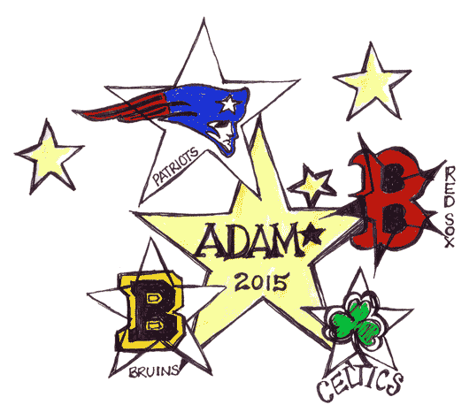
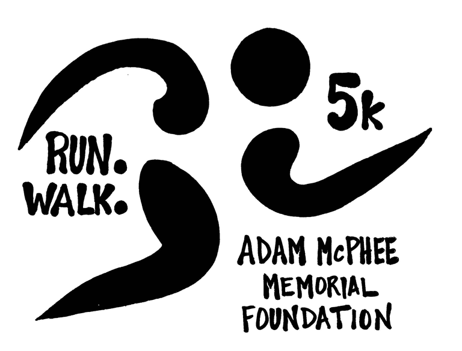

THE GOVERNOR PRESCOTT HOUSE, EPPING, NH
The McPhee Family of Epping, NH
presents HIGHNOTE – the 15th annual Balloon, Music and Fireworks Festival to benefit the
Adam McPhee Memorial Foundation. With fourteen years in the running, the festival has attracted an average of 500 guests each year and has raised about $85,000 in donations to benefit the Adam McPhee Memorial Foundation.
On Saturday, September 12th from 2:00pm to dark (rain or shine) at the grounds of the Governor Prescott House on the McPhee family farm, friends, family and festivalgoers will continue the tradition of the all day celebration.
Epping Police and Fire Department will be present. The grounds are handicap accessible.
* Due to insurance reasons we ask that you leave your pets at home.

Run. Walk. 5k.

Come join us for the official Highnote 5k! The course is an official USTAF certified course, starting at the Governor Prescott House and winding through some of Epping's new neighborhoods.
$25 registration at the event, starting at 8am. First 50 to register get a tshirt and a wristband for entrance to the Highnote Festival.
Race starts at 9am.
Music and Activities
Hot Air Balloon Rides
- Tethered Balloon rides by Re/Max ($5/person)1
Entertainment
- Groove Lounge
- Rock My Soul
- Wayne from MAINE
- Shoestring Theater giant puppetry for kids of all ages
- Wildlife Demo
Food provided by:
1 Weather permitting
Activities & Exhibits for Children and Adults
- Northstar Fireworks1
- Helicopter rides by Seacoast Helicopters1, 2 ($25/person for a 10 min ride)
- Hay Rides
- Arts and crafts for kids of all ages
- Local artisan exhibit booths
- Horseshoe Pitching Tournament
- Snowmobile water cross
- Rock climbing wall
- Games involving New England sports!
2 All flights are subject to weight restrictions. Total weight in aircraft can not exceed 700lbs.
Tickets and Directions
Tickets
Tickets are available at the gate. Music and events will be rain or shine. Fireworks are weather permitting.
$15 for adults. Kids & high school students are free.
Additional donations can be made to:
The Adam McPhee Memorial Foundation
174 Prescott Road
Epping, NH 03042
Directions
Take Route 101 to Exit 7 to 125N to 27W Main Street to 173 Prescott Rd. (NOTE: Academy St. turns into Prescott Rd)
Look for the yellow and black Highnote flags to guide you to the festival grounds.
The festival grounds are handicap accessible.
View Larger Map
The Adam McPhee Memorial Foundation
Proceeds from HIGHNOTE will benefit the Adam McPhee Memorial Foundation.
Adam McPhee was born disabled, but his handicaps didn’t stop him from making his mark. He was the first student to enter Epping High School with a special inclusion program. Adam’s cheerful personality and courageous positive attitude touched many lives, raising empathy and awareness of what the handicapped are capable of contributing to the world around them. Adam completed his four years at Epping High and participated in graduation in 1999.
After Adam passed away that same fall, the McPhee Family began a fund to give a scholarship to graduating senior at Epping High School each year. Since then, the McPhee Family has developed a fund with the Greater Piscataqua Foundation to establish a permanent fund to continue to help others forever, providing a grant program to individuals who choose to follow a career in caring for and working with such gifted people.
Benefit Proceeds
- Richie McFarland Children’s Center
- University of New Hampshire Therapeutic Riding Program
- Farmsteads of New England
- Epping Public Library
- Epping High School Graduating Seniors
- Epping Recreation Department
- Field of Dreams - Chichester
- NH and Wendall's Wish at Spinnaker Hill Farm
- Food Banks of New England
- Epping Elementary - Communication Device for students with Autism
- Disability Ski Program
- Town of Epping Health and Wellness
- The Epping Historical Society
- Oyster River Cooperative school district for Accessible walkway and sport wheelchair
- Epping Recreation Department
- Verdant Pastures
- Epping Lions Club